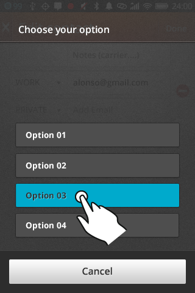

GAIAな話
Firefox OS勉強会 @ 名古屋
自己紹介
Agenda
- Firefox OSの設計とGAIA
- GeeksPhoneを例に実際のプロダクションにおけるGAIA
- GAIAを自分のデバイスに入れる
- GAIA UX / Building Block
GAIA?
Gaia is the collection of web apps which make up the front end of Firefox OS
(from https://wiki.mozilla.org/Gaia)
Firefox OSアーキテクチャ

Gaia on Production
Gaia Version
- 現在のバージョンはv1.0.1
- 開発中のバージョンはv1.1
GeeksPhone上のGAIA
- Keonはv.1.0.1ツリーそのまま
- Peakの場合は、GeekPhoneがPeak用にポートしたものを利用

GeeksPhone
GeeksPhoneの端末に関してはAndroidでおなじみのrepoコマンド用のマニフェストファイルをhttp://www.geeksphone.com/manifests/で公開しているので
カスタマイズしたい場合は参考のこと
ソースからGaiaをインストール
Gaia
UXはほぼGaiaが提供しているため、Firefox OS自体をフルビルドしなくてもUXのカスタマイズは可能
Gaiaのソースコードを取得
- gitを使って
git clone git://github.com/mozilla-b2g/gaia.git - なお、ブランチがいろいろと存在する
- v1.0.1 ... 現在のステーブル
- v1.1.0hd ... Peakのような解像度向け (開発中ツリー)
- v1-train ... 現在の開発メイン
Gaiaをインストール
- シンプルにmakeを実行すればインストールできる。(adbのパスを通しておくこと)
- もしプロダクションビルドにしたい場合
（テストツールなどを入れない）、make production - HIDPIビルド (v1.1以降)
HIDPI=1 make
ローカライズビルド
- インストールする言語をしているするJSONファイルを作成する
(例では日本語と英語のみ){ "en-US" : "English (US)", "ja" : "日本語", } - このファイルとhttp://hg.mozilla.org/gaia-l10n/から必要な言語ファイルを持ってきて、そこかのディレクトリへ
LOCALE_BASEDIR=<言語ファイルのディレクトリ> \
LOCALES_FILE=<先ほどのJSONファイル> \
make
補足
翻訳を手伝ってくれる方絶賛募集中です！
手伝っていただける方、ここは変だよって指摘をしたい方は、@dynamitter or @makoto_katoへ
Building Block
UI/UX on Firefox OS
デフォルトアプリケーションではBuilding Blockと呼ばれるフレームワークを使用
Firefox OS内蔵のUX
APIs / Libraries
- Swipe Detector
- Localization
- etc
Localization API
- APIの読み込み
<link rel="resource" type="application/l10n" href="locales/locales.ini"/> <script defer src="shared/js/l10n.js"/> - テキストノードを持つ要素にdata-l10n-id属性を付ける
<span data-10n-id="back">Back<span>
Localization API
高速化するためにローカリゼーションファイルを別ファイルにしない方法もある (GAIA_INLINE_LOCALES=1)
その他
純粋にWebOSを作るとパフォーマンスの点やメモリ使用の点に問題が発生しやすい (Firefox OSの最小構成は256MB以上が目標)ので、細かなテクニックを使ってたりする
例
- script要素にdeferを使用
- アプリ立ち上げ時に必要のない部分はコメントアウト